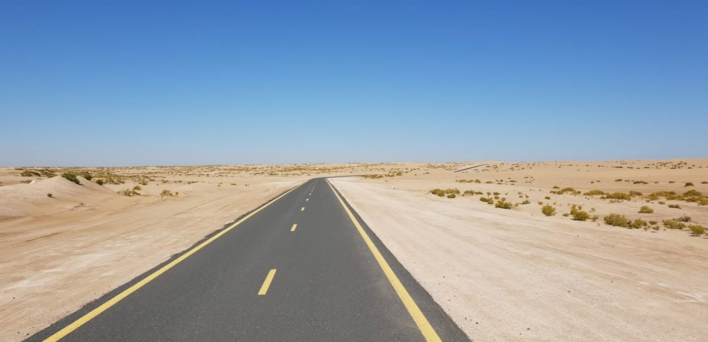
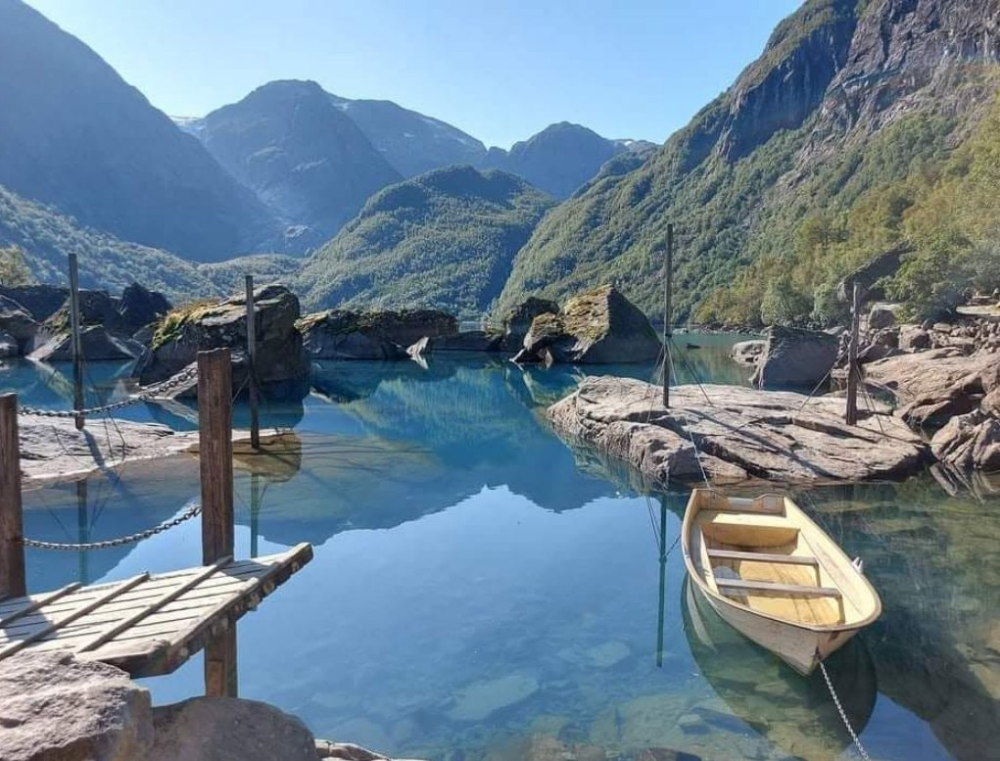
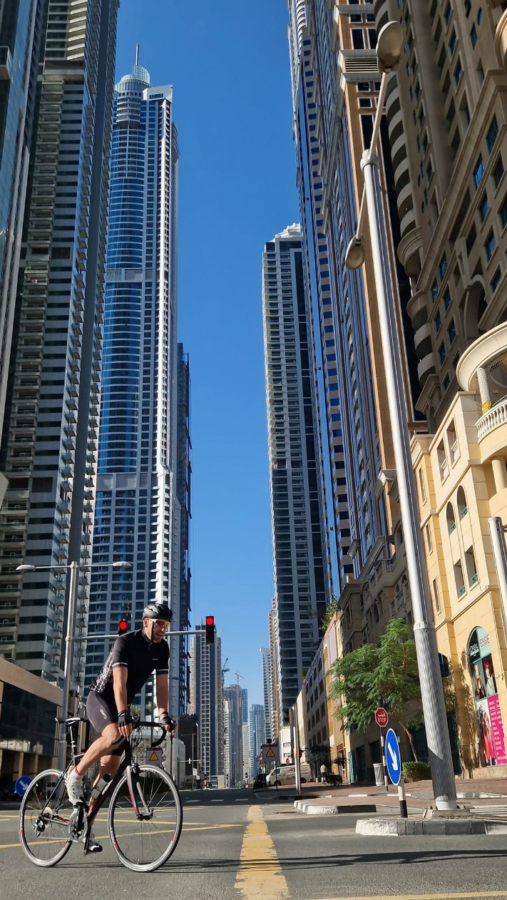
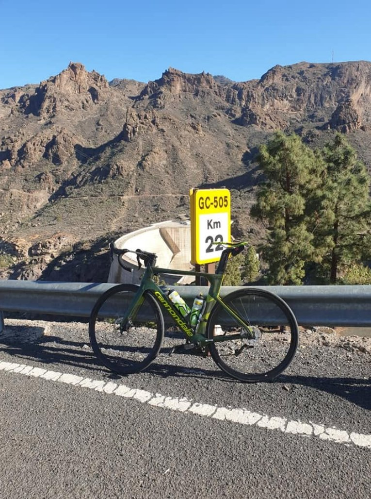
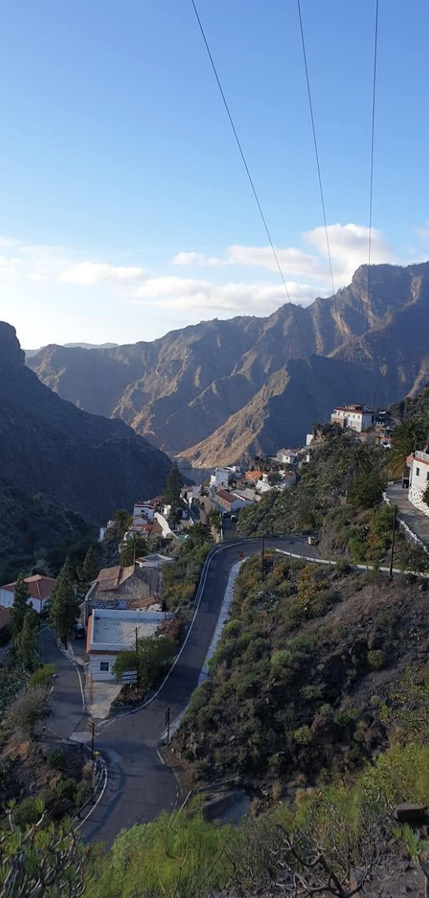
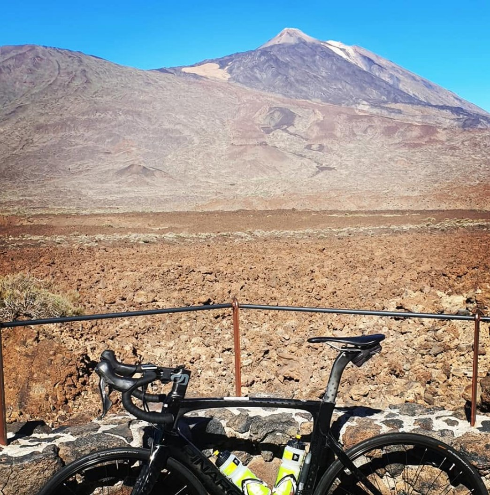
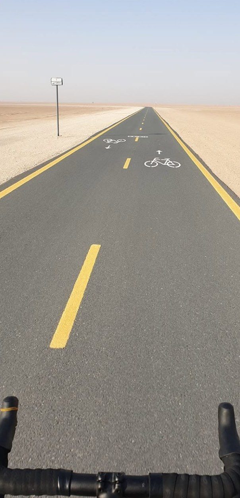
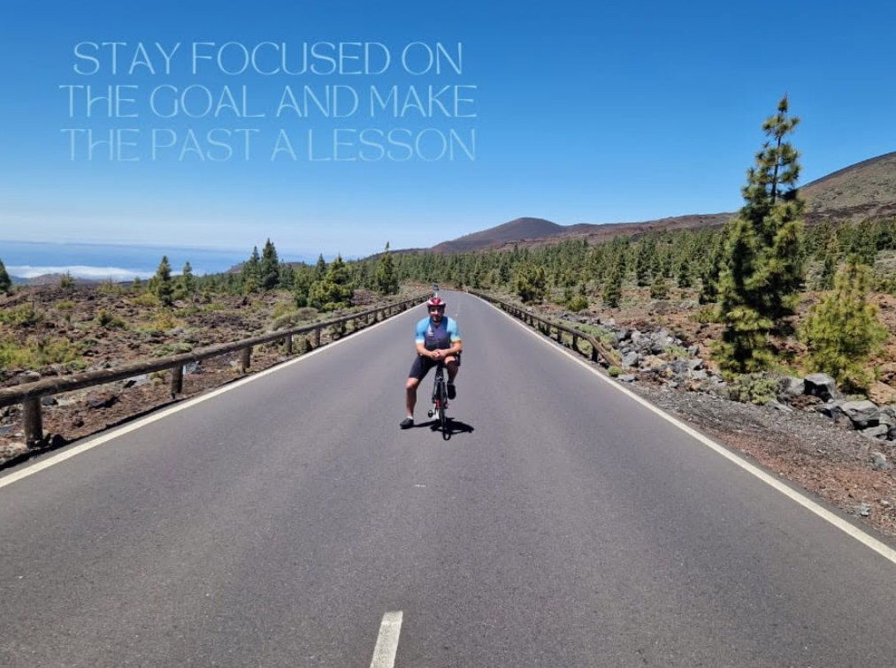

The long quiet roadFor riders who want space, tempo and the feeling of travelling between places — not just visiting them.
LINAS designs high-end biking experiences shaped by two decades of local knowledge: discreet routes, human rhythm, hidden viewpoints and a booking flow that feels personal from the first click.
The photos are not decorative. They are proof of road memory, patience and a personal standard. LINAS should feel less like mass tourism and more like being invited into a route only an experienced rider would choose.

This direction frames Linas as the curator: the person who knows when to ride, where to pause, when to bring in a local host and when to leave the guest alone with the landscape.
Each chapter can become a fully guided or partly guided route: city-to-water, road-to-viewpoint, mountain-to-small-town, or a slower cultural day with activity stops along the way.







The offer should feel premium because it is calm, prepared and personal — not because it is overloaded with luxury clichés.
The guest answers a few precise questions. LINAS responds with a fitted route concept, not a generic package.
Some days need a guide the whole way. Others are better with a guided start, hosted activity and elegant self-paced sections.
Small places, good pauses, real views, food, water, ferries, markets and people — added only when they serve the route.
The final contact address comes later. The site should already signal the standard: every inquiry is treated as a route to be designed, not a seat to be sold.
